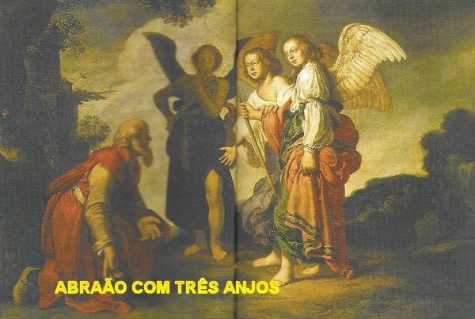
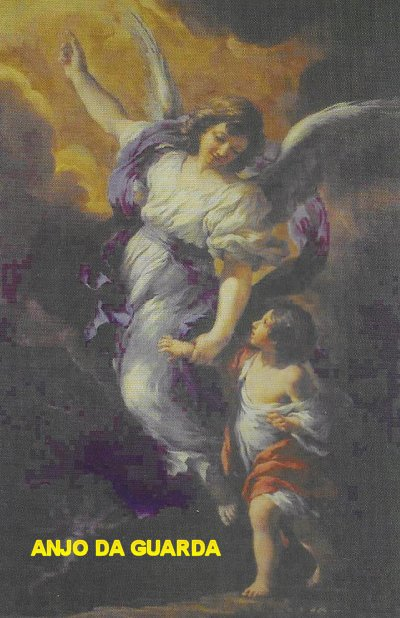
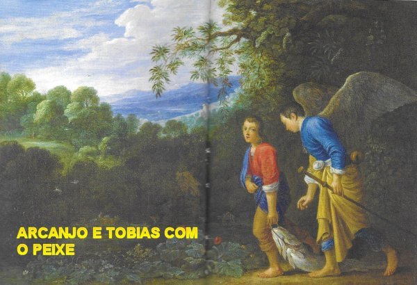
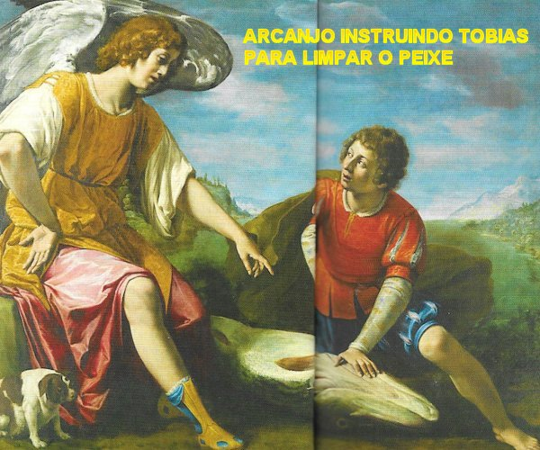
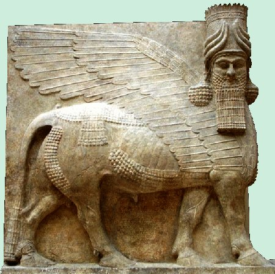
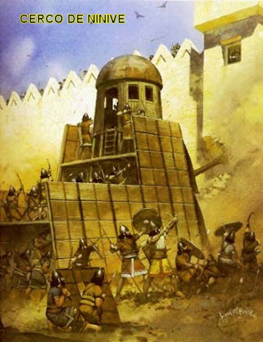
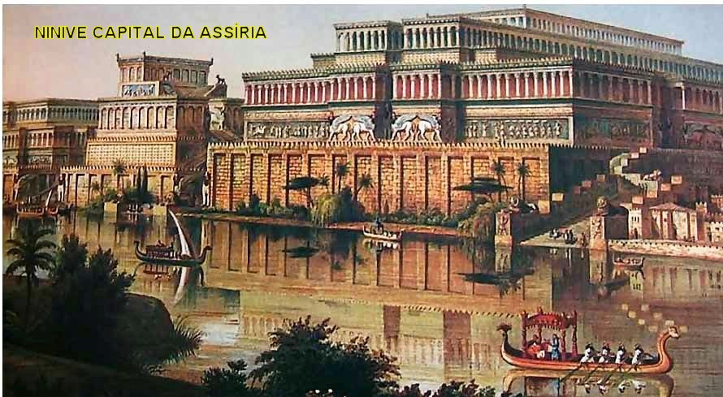
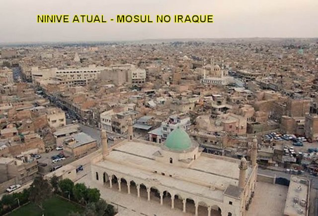
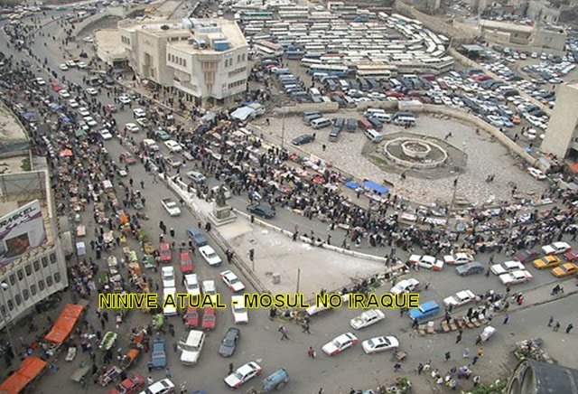

"FOTOGRAFIAS"












AGRADECIMENTO
Diversas informações contidas em nosso Site sobre o Arcanjo São Rafael, foram extraídas do livro "SAN RAFFAELE" - COLUI CHE GUARISCE, escrito pelo Sacerdote Marcello Stanzione, teólogo famoso e de renome na Itália, especialista em Angiologia. O livro foi editado em italiano e possui 224 páginas tendo sido impresso na Casa Editrice Mimep-Docete, via Papa Giovanni XXIII, nº2, Pessano con Bornago, Milano, Itália.


CONVITE
Visite o PORTAL do APOSTOLADO DOS SAGRADOS CORAÇÕES . Nele encontrará todos os Sites que construímos com muito amor e devoção, fundamentados na Sagrada Escritura, na Tradição Cristã, nas Manifestações Sobrenaturais e na Vida e Obra dos Santos. Grande variedade de assuntos: NOSSA SENHORA DA CONCEIÇÃO APARECIDA; A IMACULADA CONCEIÇÃO (Revelação Divina); NOSSA SENHORA DE NAJU (Impressionantes Milagres Eucarísticos); O MISTÉRIO DE DEUS; JESUS DE NAZARÉ (O Rei dos Reis); ADORÁVEL E MISTERIOSO ESPÍRITO SANTO; A VIDA DE NOSSA SENHORA; OS ANJOS DO SENHOR; A VIDA ADMIRÁVEL DE SÃO JOSÉ; SÃO JUDAS TADEU (Causas Impossíveis); NOSSA SENHORA DE FÁTIMA e muitos outros, levando a Verdade Cristã à todos os corações de boa vontade.
http://www.apostoladosagradoscoracoes.com.br/


"E-MAIL"
Para se comunicar conosco, favor utilizar o E-mail a seguir:


FIRMAS DE BUSCAS